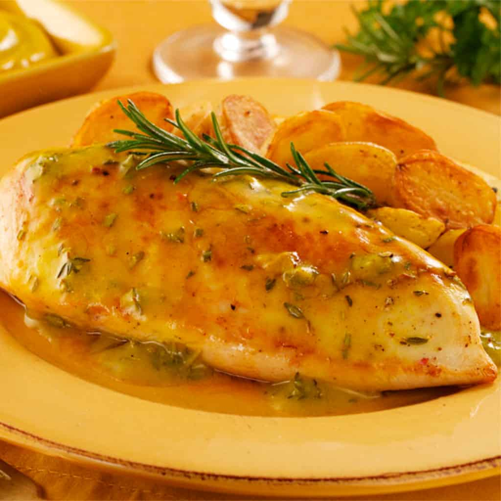

Pollo a la Mostaza

El Pollo a la Mostaza es un plato que se originó en la región de Borgoña, Francia, en la década de 1930. Se creó en un pequeño restaurante familiar que se especializaba en recetas tradicionales francesas. La combinación de pollo tierno con una salsa cremosa de mostaza se volvió rápidamente popular y se ha convertido en un plato clásico de la cocina francesa desde entonces.
Ingredientes
- 4 pechugas de pollo deshuesadas y sin piel.
- 2 cucharadas de aceite de oliva.
- 2 cucharadas de mantequilla.
- 1 cebolla picada.
- 2 dientes de ajo picados.
- 1/2 taza de caldo de pollo.
- 1/2 taza de crema de leche.
- 3 cucharadas de mostaza Dijon.
- 2 cucharadas de mostaza de grano.
- Sal y pimienta al gusto.
- Perejil fresco picado para decorar.
Instucciones
- Comienza por sazonar las pechugas de pollo con sal y pimienta al gusto.
- Calienta el aceite de oliva en una sartén grande a fuego medio-alto. Cuando esté caliente, agrega las pechugas de pollo y cocina durante aproximadamente 4 minutos de cada lado, o hasta que estén doradas y cocidas por completo. Retira las pechugas de la sartén y reserva.
- En la misma sartén, derrite la mantequilla a fuego medio. Agrega la cebolla y el ajo picados, y saltea durante unos minutos hasta que estén tiernos y fragantes.
- Agrega el caldo de pollo, la crema de leche, la mostaza Dijon y la mostaza de grano a la sartén. Revuelve bien y lleva la mezcla a ebullición. Reduce el fuego y cocina a fuego lento durante unos minutos hasta que la salsa espese ligeramente.
- Vuelve a poner las pechugas de pollo en la sartén con la salsa, cubriéndolas bien con la misma. Cocina a fuego lento durante unos minutos para calentar el pollo y permitir que absorba los sabores de la salsa.
- Sirve el Pollo a la Mostaza caliente, decorado con perejil fresco picado. Puedes acompañarlo de arroz, puré de papas o vegetales al vapor.
Volver